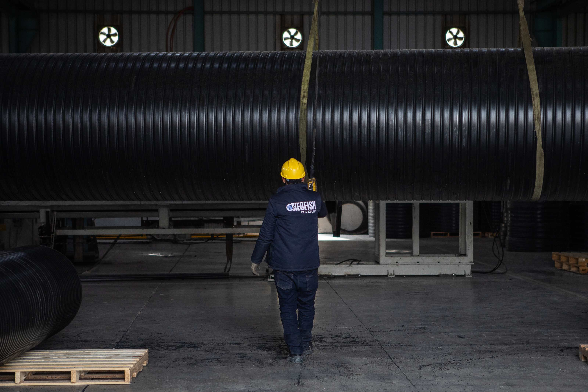
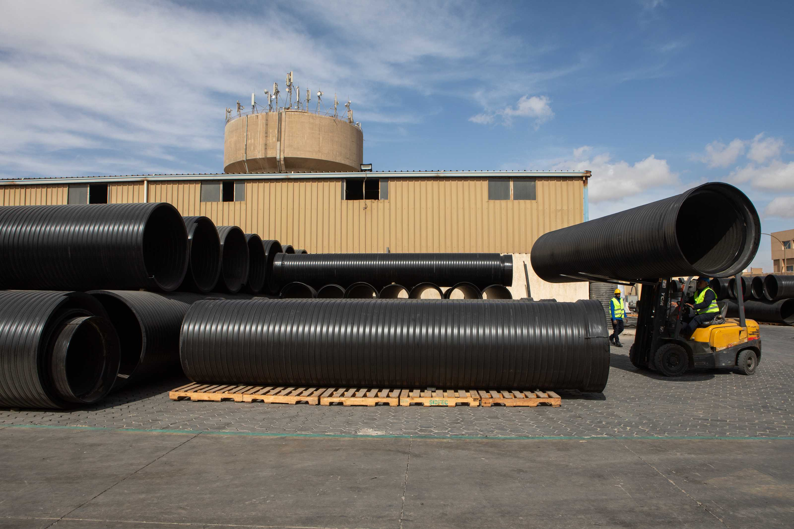

Pipe Range
Factory-scale extrusion and handling visualsIndustrial-grade HDPE pipeline systems
Manufactured at scale. Verified in the lab. Ready for the field.
Polygrande now leads with real production and quality-control imagery, giving the website a stronger industrial identity rooted in pipe manufacturing, testing discipline, and project-ready delivery.
- Production Floor Large-diameter pipe handling and fabrication presented with real plant photography.
- Lab Tested Visual support for stiffness and quality-control messaging across the site.
- Project Ready A stronger stub for brochures, specs, certifications, and inquiries.

Quality Control
Testing imagery now anchors the standards narrativeOperational video story
Production Scale
Large-diameter pipe moves through a floor built for repeatable heavy handling.
Controlled Handling
Operators guide lift, rotation, and positioning with visible process discipline.
Testing Discipline
Lab checks turn performance claims into measured stiffness and dimensional proof.
Stock Visibility
Yard and dispatch footage show readiness, inventory presence, and staged delivery control.
Field Alignment
The product story stays connected to trench conditions, installation, and site support.
Partner Signal
Commercial conversations are backed by real operation, not abstract brochure language.


Core capabilities
A website stub that now feels closer to the real operation.
The current structure keeps product storytelling, standards, and export-ready messaging in place while grounding the experience with real photos from the plant and the testing environment.
Pipe Systems
Showcase structured ranges, diameters, and infrastructure use cases with stronger visual proof.
Testing Protocols
Connect stiffness, inspection frequency, and quality checkpoints to the real lab environment.
Welding Support
Keep room for installation methods, extrusion welding, and field procedures as content grows.
Specification Hub
Extend this into downloadable catalogs, brochure tables, certifications, and quote requests.
Factory and field coverage
More of the real operation now appears throughout the website.
Production-floor handling, yard inventory, and outbound logistics can now show up side by side, giving the website more visual proof across manufacturing, storage, and delivery.



Standards and control
Quality language becomes more believable when the lab is visible.
These testing images give the standards section a clearer role: explain how Polygrande measures, validates, and documents performance for demanding infrastructure work. A dedicated calculator page can now turn these conversations into a simple engineering-style tool for visitors.
Testing Story
Use this panel for DIN16961, EN1610, DVS2207, inspection frequencies, and dimensional verification notes.
Dimensional Checks
Nominal diameters, tolerances, wall thickness, and connection formats.
Ring Stiffness
Dedicated space for stiffness values, acceptance criteria, and method references.
Documentation
Future home for downloadable brochures, certificates, and test reports.


Brand direction
Dark, mechanical, and now backed by the real environment.
The visual system keeps the logo-inspired rounded framing, bold typography, and restrained accent color, but the site now feels far less generic because it is built around the actual plant and quality lab.
Visual cue
Production hall scale, black corrugated pipe, metallic structures, and yellow safety accents.
Tone
Reliable, technical, and export-ready without losing the human side of the operation.
Next content
Add real company copy, product tables, brochure downloads, certifications, and contact details.
Ready to expand
Turn the visual foundation into a full product website.
Add live product data, specification downloads, and real contact channels to move from stub to launch-ready.